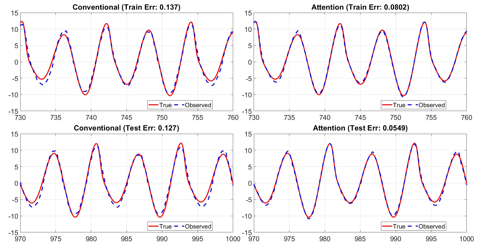

<div id="portfolio-page" class="portfolio-page-content">
    <div class="container">
        <!-- Portfolio Navigation -->
        <div class="portfolio-nav">
            <div id="portfolio-close-button" class="portfolio-close-button">
                <a href="#portfolio"><i class="fa fa-close"></i></a>
            </div>
        </div>

        <!-- Portfolio Title -->
        <div class="portfolio-title">
            <h1>Reservoir-Based State Estimation of Partially Observable Multi-Agent Systems</h1>
        </div>

        <div class="row">
            <!-- Images / Carousel -->
            <div class="col-sm-7 col-md-7 portfolio-block">
                <div class="owl-carousel portfolio-page-carousel">
                    <div class="item">
                        
                    </div>
                </div>

                <script type="text/javascript">
                    jQuery(document).ready(function($){
                        $('.portfolio-page-carousel').owlCarousel({
                            smartSpeed: 1200,
                            items: 1,
                            loop: true,
                            dots: true,
                            nav: true,
                            navText: false,
                            margin: 10
                        });
                    }); 
                </script>
            </div>

            <!-- Project Description -->
            <div class="col-sm-5 col-md-5 portfolio-block">

                <ul class="project-general-info">
                    <li>
                        <i class="fa fa-user"></i> 
                        <strong>Collaborators:</strong>
                        <a href="https://scholar.google.com/citations?user=-pHeI6oAAAAJ&hl=en" target="_blank">Francesco Sorrentino</a>
                    </li>  
                    <li>
                        <i class="fa fa-calendar"></i> September 2025 - September 2026
                    </li>
                </ul>
                <div class="block-title">
                    <h3>Motivation</h3>
                </div>
                <p class="text-justify">
                    Multi-agent complex systems often exhibit strongly coupled dynamics while only partial observations are available from individual agents. 
                    In this research, reservoir computing is explored as a data-driven approach for reconstructing the unobserved state of one agent using 
                    observations from other agents, without requiring explicit knowledge of the underlying system dynamics.
                </p>
                <div class="block-title">
                    <h3>Results</h3>
                </div>
                <p class="text-justify">
                    Developed an attention-based reservoir computing framework for state reconstruction in partially observable multi-agent networks. 
                    The proposed approach learns informative cross-agent interactions and selectively incorporates them into the reservoir feature space, 
                    improving reconstruction accuracy while reducing the number of required features compared with conventional reservoir computing approaches.
                    </p>
                <!-- Software and Frameworks -->
                <div class="tags-block">
                    <div class="block-title">
                        <h3>Software and Frameworks:</h3>
                    </div>
                    <ul class="tags">
                        <li><a>MATLAB</a></li>
                    </ul>
                </div>
            </div>
        </div>
    </div>
</div>
